Eine Stadt, die am Morgen mit Tee beginnt, unter Qilou-Dächern durch den Regen geht und am Abend auf dem Wasser leuchtet.
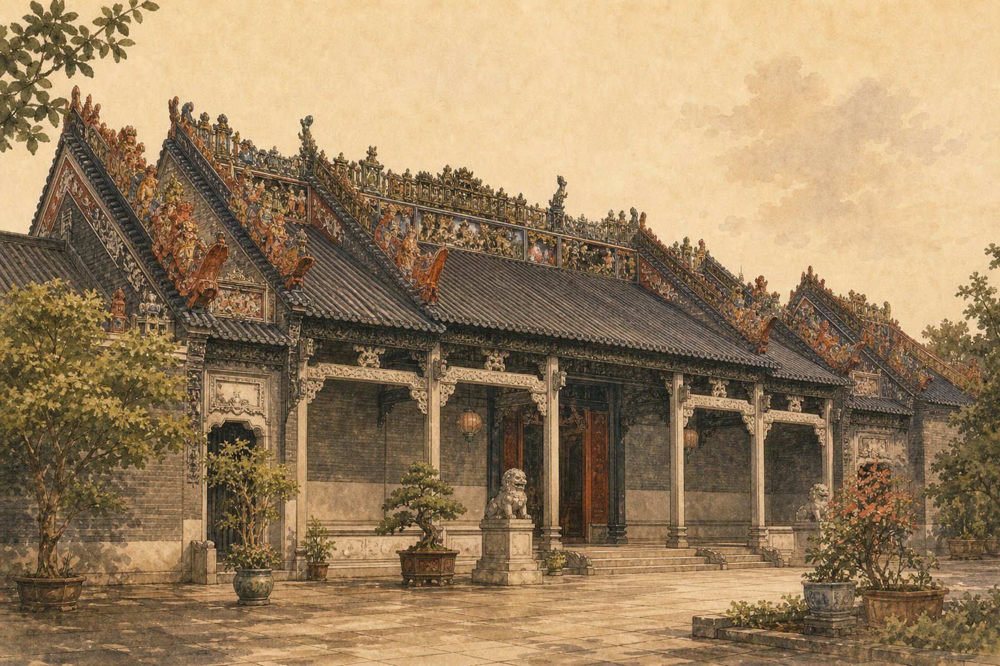
Guangzhou ist alt und neu zugleich. Auf den Dächern der Chen-Ahnenhalle stehen Figuren aus Keramik. Sie erzählen von einer Zeit, in der Handwerk eine Sprache war. Die Stadt spricht leise, aber sie hat viele Stimmen: Teehäuser, Qilou-Gassen, den Baiyun-Berg im Norden und den Perlfluss, der abends weich und hell wird.
Acht Stationen durch eine Stadt, die Dampf, Stein, Wasser und Blumen kennt.
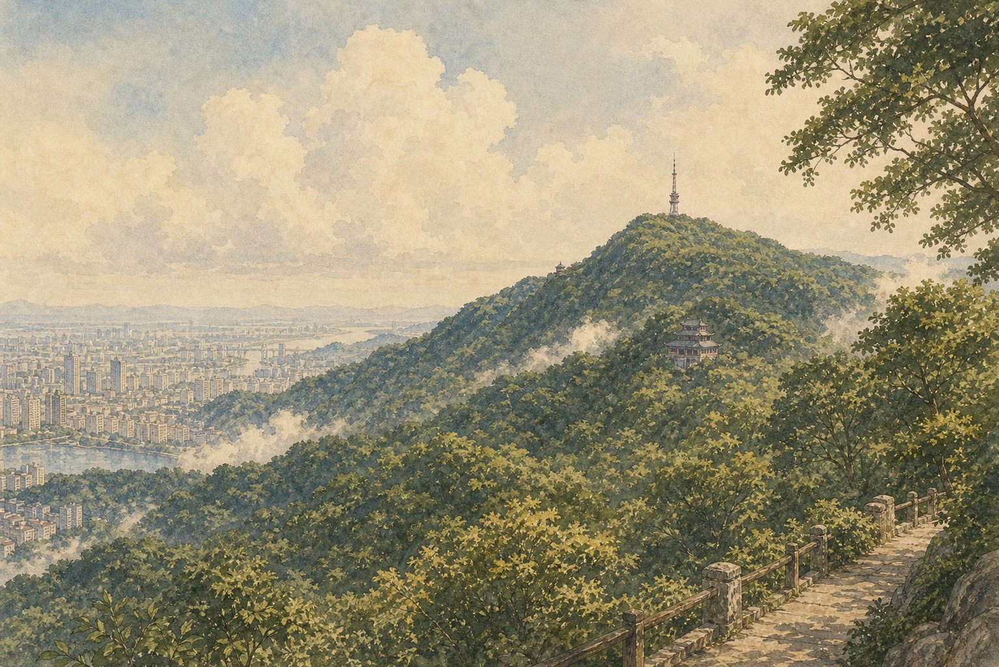
Im Norden der Stadt steigt der Baiyun-Berg langsam an. Von oben sieht man den Perlfluss und die ganze Stadt. Guangzhou atmet durch diesen Berg.
Der Baiyun-Berg ist kein hoher Gipfel, sondern ein Netz aus Wegen, Pavillons und grünen Hängen. Am Morgen steigt Nebel auf — daher der Name "Weiße-Wolke-Berg". Für die Menschen in Guangzhou ist er der Ort zum Durchatmen.
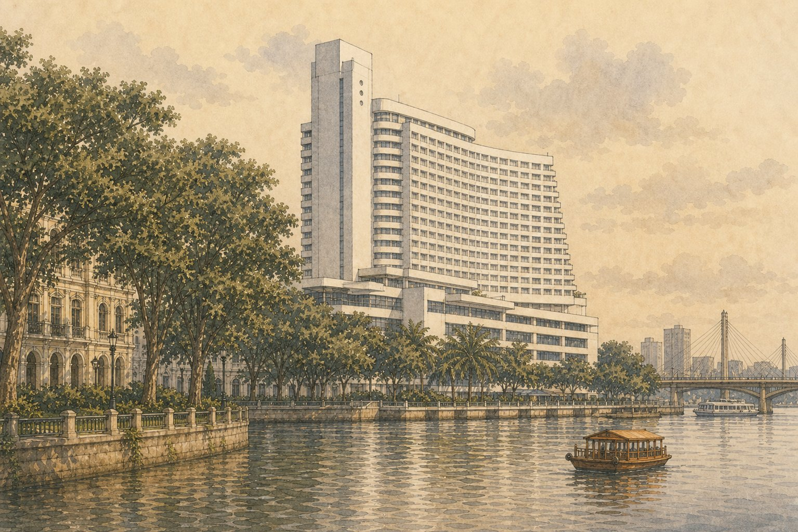
Alte Bäume, weiße Gebäude und langsames Gehen. Shamian liegt am Wasser. Das Weiße-Schwan-Hotel steht am Ufer, ruhig und groß.
Früher war Shamian eine kleine Insel für Händler aus Europa. Heute ist sie ein ruhiger Ort mitten in der Stadt. Man geht unter alten Banyan-Bäumen, hört Wasser und vergisst fast, dass Guangzhou direkt nebenan weitermacht.
In der Abenddämmerung leuchtet der Canton Tower über dem Perlfluss. Er ist dünn, hoch und voll Licht. Guangzhou zeigt hier sein modernes Gesicht.
Mit 600 Metern ist er einer der höchsten Türme der Welt. Seine Form erinnert an eine Sanduhr — schmal in der Mitte, weit oben und unten. Nachts wechseln die Farben, und der ganze Perlfluss spiegelt das Licht.
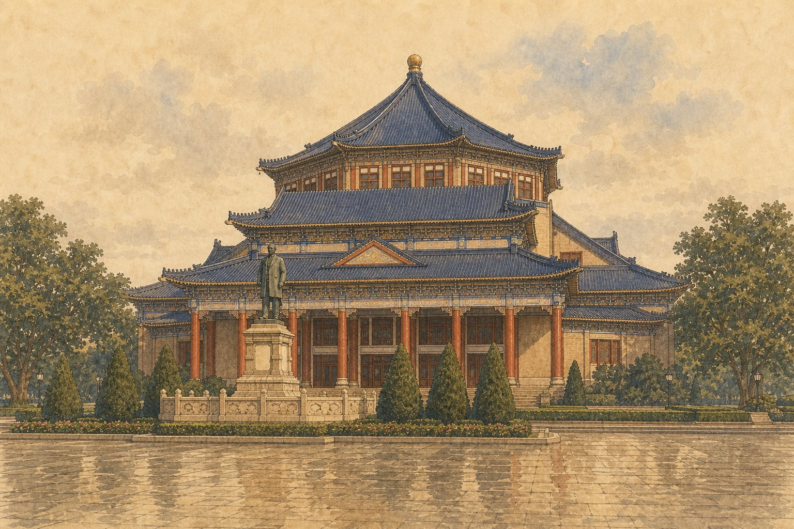
Ein blaues Dach, ein großer Platz. Sun Yat-sen war Arzt und Revolutionär. Seine Halle ist ein Ort der Erinnerung, still und würdig mitten in der Stadt.
Sun Yat-sen wird in ganz China "Vater der modernen Nation" genannt. Er ist in Guangdong geboren. Der große Innenraum kommt ohne tragende Säulen aus — eine architektonische Besonderheit.
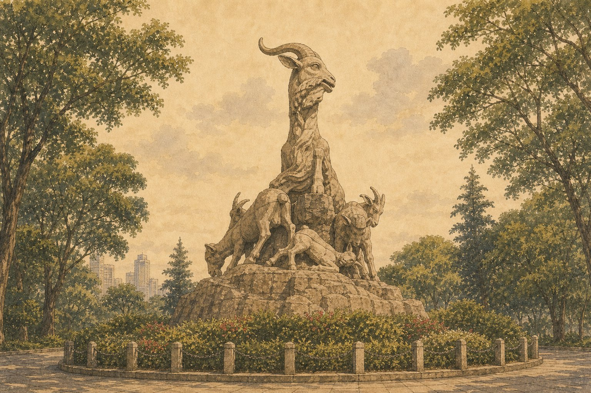
Fünf Ziegen aus Stein stehen im Park. Eine alte Legende sagt: Sie brachten den Menschen Reis und lehrten sie, hier zu leben. Ein grüner Ort voll Stadtgedächtnis.
Die Legende erzählt: Vor langer Zeit kamen fünf Unsterbliche auf Ziegen vom Himmel. Sie brachten Reisähren und versprachen, dass Guangzhou nie hungern würde. Deshalb nennt man die Stadt auch "Stadt der Ziegen" oder "Stadt der fünf Ziegen".
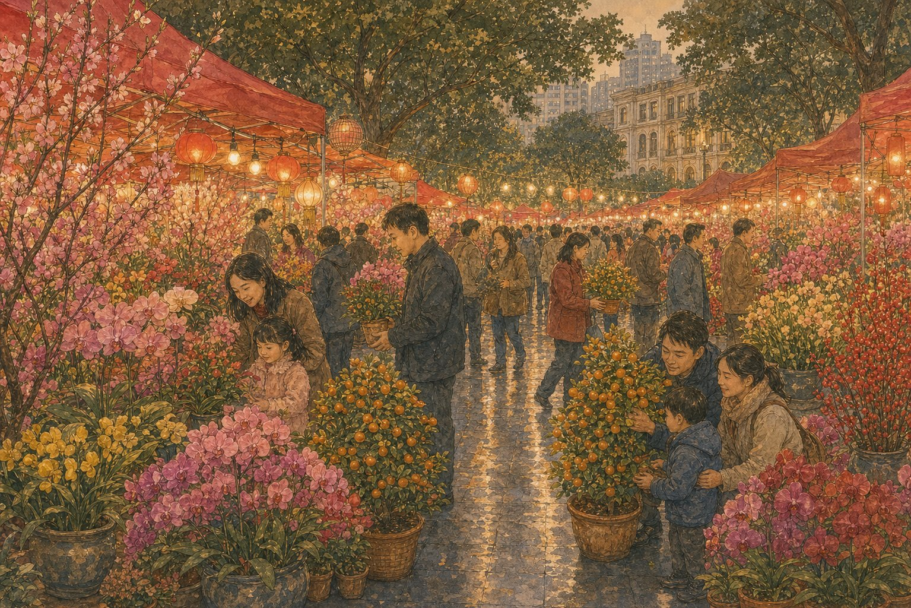
Kurz vor dem Neujahrsfest duftet eine ganze Straße nach Blumen, Orangenbäumen und Grün. Menschen gehen langsam, wählen Blumen aus und tragen das Jahr nach Hause.
Der Blumenmarkt öffnet in den letzten Tagen vor dem chinesischen Neujahr. Viele Familien kaufen Blumen für das neue Jahr: Orchideen für Glück, Orangenbäume für Geld, Pfingstrosen für Liebe. Es ist laut, eng, warm und voller Hoffnung.
Am Abend wird der Perlfluss weich. Lichter spiegeln sich auf dem Wasser, Brücken leuchten, und der Wind kommt von Süden. Guangzhou atmet aus.
Der Perlfluss ist die Hauptader der Stadt. Früher fuhren hier Boote mit Seide und Tee nach Süden, Richtung Meer. Heute gehen die Menschen abends ans Ufer: Joggen, reden, Musik hören, einfach sitzen und schauen. Das Wasser fließt — langsam, wie Guangzhou selbst.
In Guangzhou isst man nicht nur. Man teilt, wartet auf Dampf und versteht die Stadt durch den Geschmack.
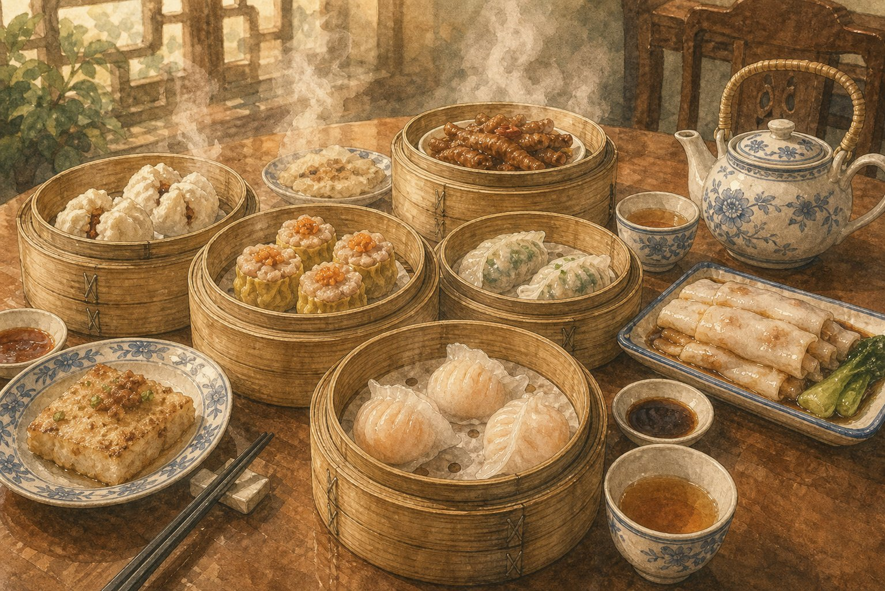
Der Tag beginnt mit Tee und kleinen Bambuskörben. Dampf steigt auf, Teller werden geteilt, und niemand hat es eilig. Yum Cha ist kein Essen — es ist eine Uhrzeit.
Die Kellnerinnen schieben Wagen zwischen den Tischen. Du zeigst auf einen Korb, sie öffnen den Deckel, und der Dampf steigt dir ins Gesicht. Die besten Dim-Sum-Restaurants sind morgens um acht schon voll — mit Familien, Zeitungen und Teetassen, die nie leer werden.
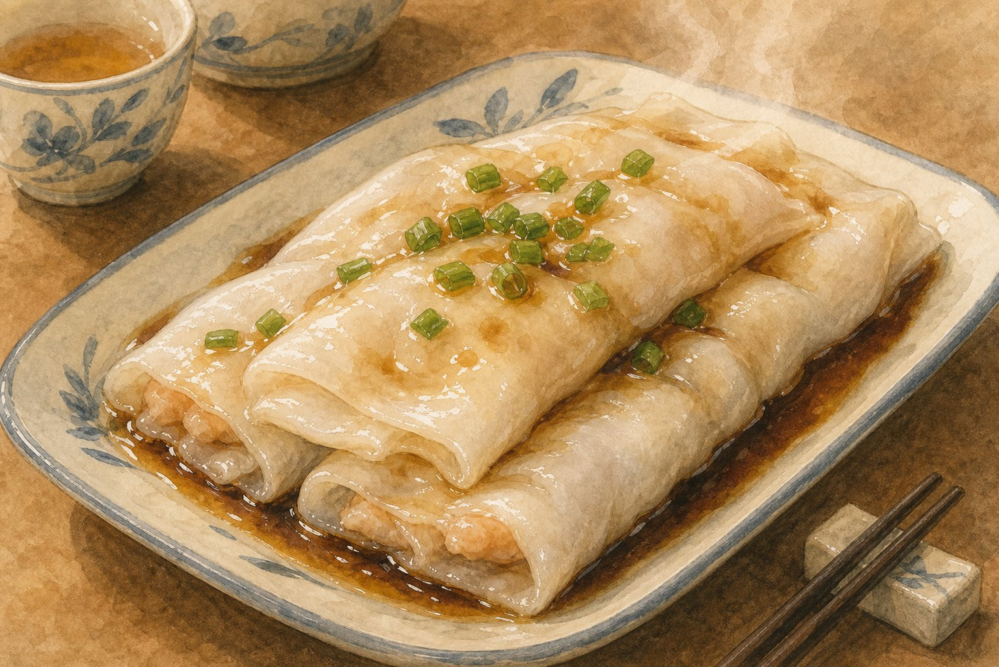
Weich, glatt und noch warm vom Dampf. Die Reisnudelrollen kommen in Sojasoße und gleiten fast von selbst. Man isst sie am Morgen, am Mittag, in der Nacht — immer dann, wenn die Straße nach Essen riecht.
Der Koch gießt dünnen Reisteig auf ein Tuch, legt Fleisch oder Ei darauf und schiebt alles in den Dampf. Nach zwei Minuten hebt er das Tuch, rollt den Teig mit einem Spachtel und legt ihn auf den Teller. Alles dauert vielleicht drei Minuten — und schmeckt nach zwanzig Jahren Übung.
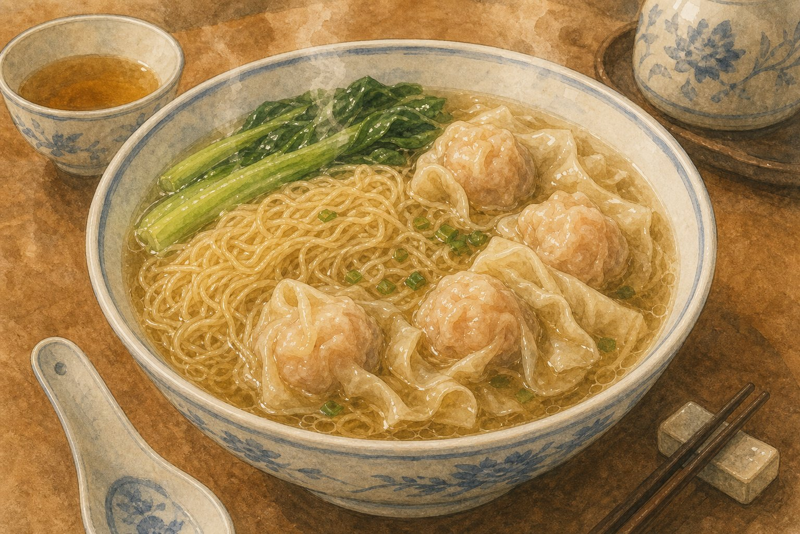
Klare Suppe, dünne Nudeln, kleine gefüllte Teigtaschen. Kein lautes Gericht — aber eins, das jeder kennt. Am Straßenrand, in alten Läden, überall in Guangzhou.
Die Nudeln sind so dünn wie Haare und werden mit Alkalilauge gemacht — darum haben sie einen leichten Biss. Die Wontons sind gefüllt mit Garnelen und Schwein. Die Suppe kocht stundenlang mit getrocknetem Fisch und Ingwer. Das Ergebnis ist klar, tief und warm.
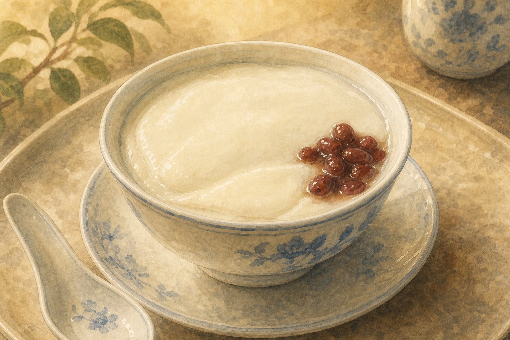
Nach dem Salzigen kommt das Süße. Die doppelte Milchcreme ist weich, kühl und schmeckt nach Kindheit. Aus Shunde gekommen, in Guangzhou geblieben.
Die "doppelte Haut" entsteht so: Man erhitzt Milch, lässt sie abkühlen — die erste Haut bildet sich. Dann mischt man Eiweiß und Zucker unter die Milch und erhitzt sie noch einmal — die zweite Haut entsteht. Das Ergebnis ist seidig, süß und kühl. Ein perfekter Abschluss nach scharfer oder salziger Küche.
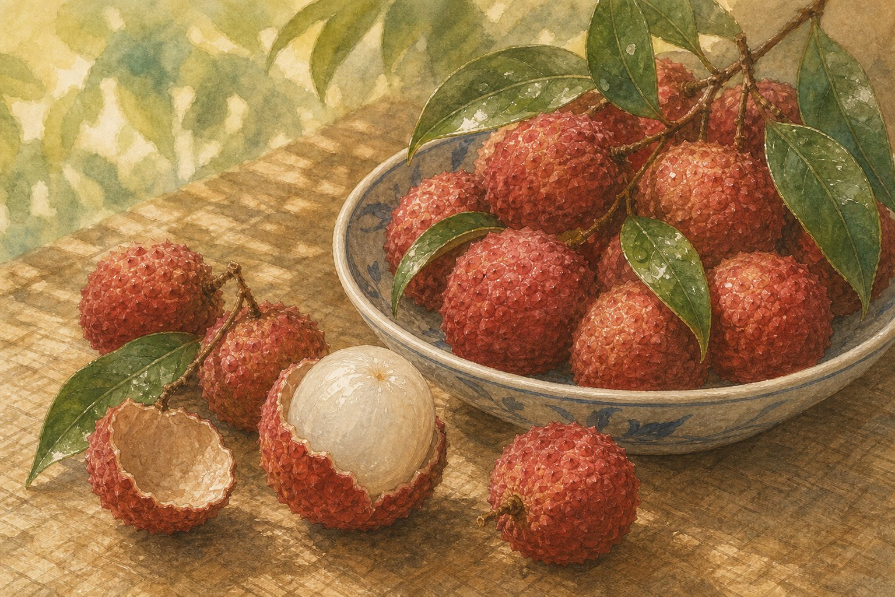
Im Sommer legen die Menschen in Guangzhou rote Litschis in die Hand. Die Schale bricht leicht, das Innere ist süß und kühl. Der Geschmack des Südens.
Litschis wachsen in Guangdong seit sehr langer Zeit. Ein alter Dichter schrieb sinngemäß: Mit Litschis könnte er im Süden bleiben. Im Juni sind die Straßenmärkte rot von Litschis — man kauft sie in großen Bündeln, isst sie unter Bäumen und spuckt die Kerne ins Gras.
Kurze Wörter für Orte, Essen und Stadt. Tippen zum Umklappen.
Diese Sätze sind kurz. Du kannst sie in Guangzhou benutzen.
Wo ist der Perlfluss?珠江在哪里？
Ich möchte Dim Sum probieren.我想尝尝点心。
Das schmeckt sehr gut.这个非常好吃。
Wie komme ich zum Canton Tower?广州塔怎么走？
Noch eine Tasse Tee, bitte.请再来一杯茶。
Der Markt ist wunderschön.这个市场太美了。
Drei kleine Fragen. Wähle eine Antwort.
1. Was ist "Yum Cha"?
2. Wie heißt der Berg im Norden Guangzhous?
3. Warum nennt man Guangzhou "Stadt der fünf Ziegen"?
Guangzhou bleibt nicht laut im Kopf. Es bleibt wie warmer Tee, wie Regen unter einem Qilou-Dach, wie Licht auf dem Perlfluss — und wie ein Tisch, an dem noch ein kleiner Korb frei ist.